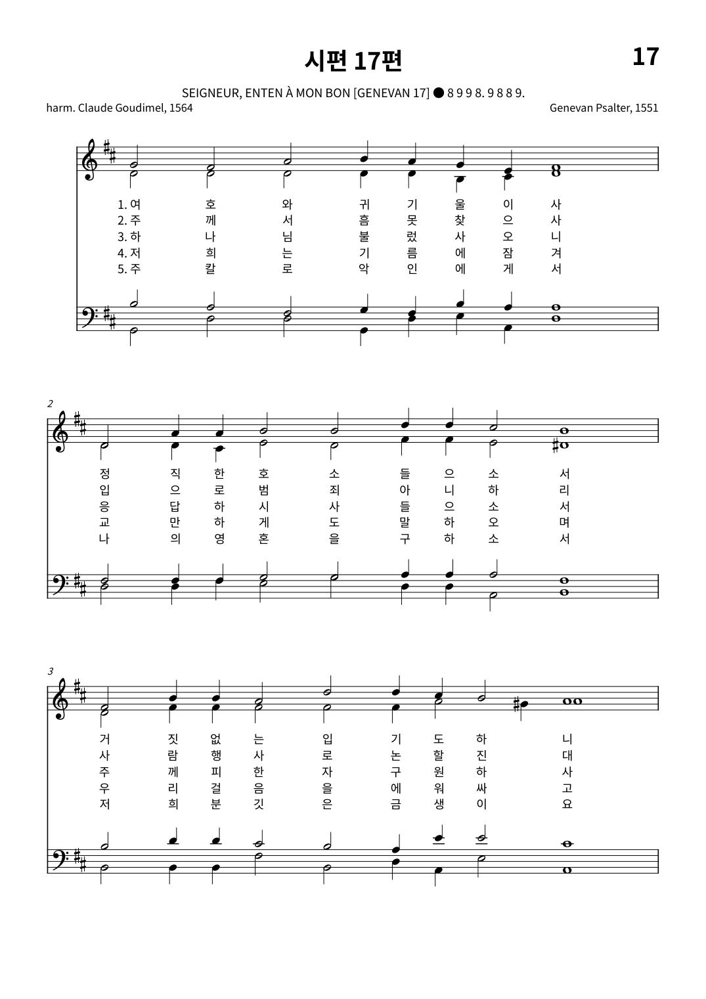
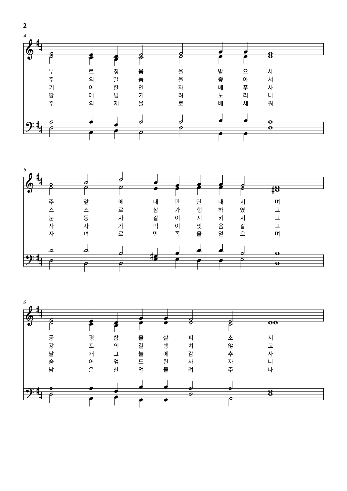
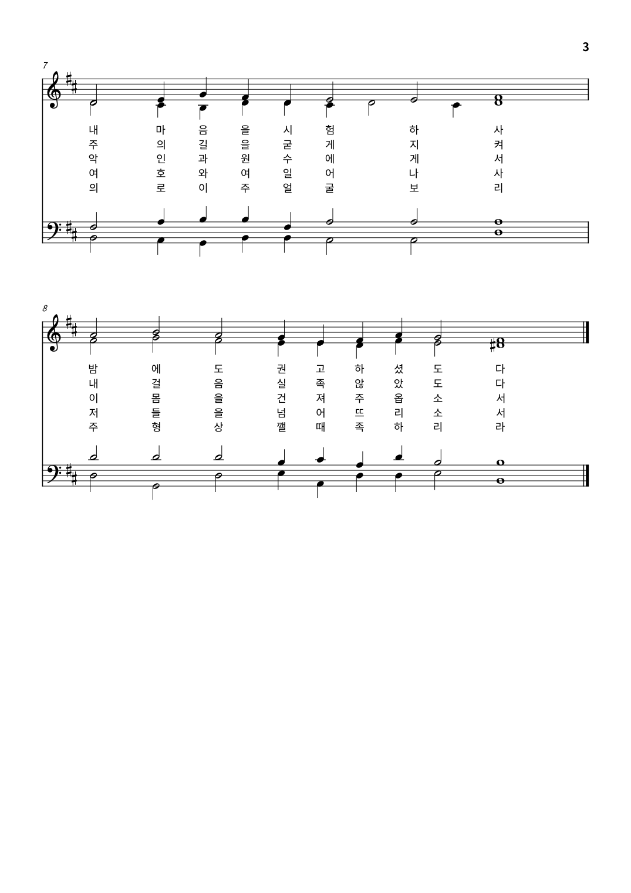

시편 17편
SEIGNEUR, ENTEN À MON BON [GENEVAN 17] · 8 9 9 8. 9 8 8 9.
곡조: Genevan Psalter, 1551 · 화성: Claude Goudimel, 1564 · 가사: 개역한글판 시편 17편 편역(AI 초벌 편역판 · 신학 감수 전) · 5절
악보 PDF MusicXML(출력용) MusicXML(반주용, 전주·반복 포함) 개역한글 시편 17편 읽기
악보



가사
1절 (시편 1~3절 앞)
여호와 귀 기울이사
정직한 호소 들으소서
거짓 없는 입 기도하니
부르짖음을 받으사
주 앞에 내 판단 내시며
공평함을 살피소서
내 마음을 시험하사
밤에도 권고하셨도다
여호와 귀 기울이사
정직한 호소 들으소서
거짓 없는 입 기도하니
부르짖음을 받으사
주 앞에 내 판단 내시며
공평함을 살피소서
내 마음을 시험하사
밤에도 권고하셨도다
2절 (시편 3절 뒤~5절)
주께서 흠 못 찾으사
입으로 범죄 아니하리
사람 행사로 논할진대
주의 말씀을 좇아서
스스로 삼가 행하였고
강포의 길 행치 않고
주의 길을 굳게 지켜
내 걸음 실족 않았도다
주께서 흠 못 찾으사
입으로 범죄 아니하리
사람 행사로 논할진대
주의 말씀을 좇아서
스스로 삼가 행하였고
강포의 길 행치 않고
주의 길을 굳게 지켜
내 걸음 실족 않았도다
3절 (시편 6~9절)
하나님 불렀사오니
응답하시사 들으소서
주께 피한 자 구원하사
기이한 인자 베푸사
눈동자 같이 지키시고
날개 그늘에 감추사
악인과 원수에게서
이 몸을 건져 주옵소서
하나님 불렀사오니
응답하시사 들으소서
주께 피한 자 구원하사
기이한 인자 베푸사
눈동자 같이 지키시고
날개 그늘에 감추사
악인과 원수에게서
이 몸을 건져 주옵소서
4절 (시편 10~13절 앞)
저희는 기름에 잠겨
교만하게도 말하오며
우리 걸음을 에워싸고
땅에 넘기려 노리니
사자가 먹이 찢음 같고
숨어 엎드린 사자니
여호와여 일어나사
저들을 넘어뜨리소서
저희는 기름에 잠겨
교만하게도 말하오며
우리 걸음을 에워싸고
땅에 넘기려 노리니
사자가 먹이 찢음 같고
숨어 엎드린 사자니
여호와여 일어나사
저들을 넘어뜨리소서
5절 (시편 13절 뒤~15절)
주 칼로 악인에게서
나의 영혼을 구하소서
저희 분깃은 금생이요
주의 재물로 배 채워
자녀로 만족을 얻으며
남은 산업 물려주나
의로이 주 얼굴 보리
주 형상 깰 때 족하리라
주 칼로 악인에게서
나의 영혼을 구하소서
저희 분깃은 금생이요
주의 재물로 배 채워
자녀로 만족을 얻으며
남은 산업 물려주나
의로이 주 얼굴 보리
주 형상 깰 때 족하리라